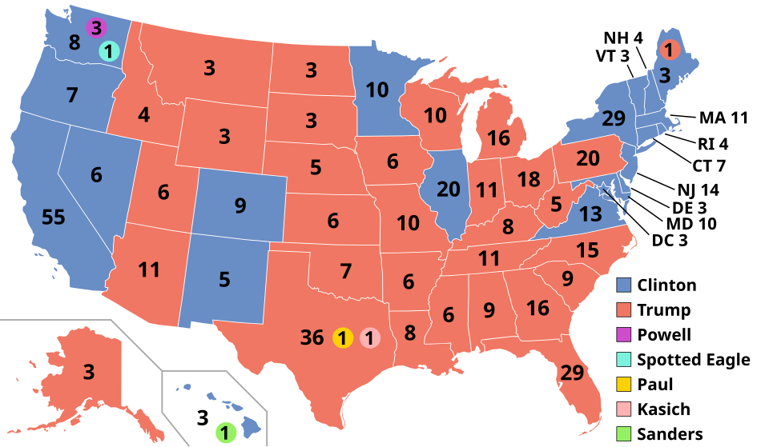

Visualization Critique and Redesign
2016 U.S. presidential election | Yifan Zuo
The original

The map colors each state by the winner (blue for Clinton, red for Trump) and prints the state's electoral votes on it. Dots in five additional colors mark seven electors who did not vote for their state's winner. The data behind it is one row per state: votes for each candidate and electoral votes awarded. My critique and design rationale are in the accompanying report.
The redesign
Hover over any state in either view to see it in both. Color is the margin between the two main candidates, from deep blue (Clinton ahead) through white (a tie) to deep red (Trump ahead).
Popular vote vs. electoral vote
The winner of the electoral vote was not the winner of the popular vote. Gray shows other candidates (5.7% of popular votes) and 7 electoral votes for other candidates.
Every state as an equal tile, colored by margin
The number is the state's electoral votes. A ring in the corner marks a state with faithless electors.
Electoral votes lined up by margin
Each state's width is its electoral votes. The line marks 270, the number needed to win. This is a state-level comparison, not a reconstruction of individual electors' votes.
Notes: the margin is Clinton's share minus Trump's share of all votes in the state, shown on a scale capped at 40 points. Maine's fourth electoral vote (ME-02) went to Trump. The tile and strip use statewide margins and total allocated electoral votes, without separating districts or faithless electors. The national bars show the actual electoral votes cast. Third-party votes are counted in the total but not in the color, which matters most in Utah, where one independent candidate took 21.5%. The tile layout is a common schematic of U.S. geography and is not to scale.
Data and references
- Vote and electoral vote totals by state: Federal Election Commission, Federal Elections 2016: Election Results for the U.S. President, the U.S. Senate and the U.S. House of Representatives (December 2017). Stored in data/election2016.csv.
- Original visualization: Wikipedia, 2016 United States presidential election .
- Built with D3.js v7.